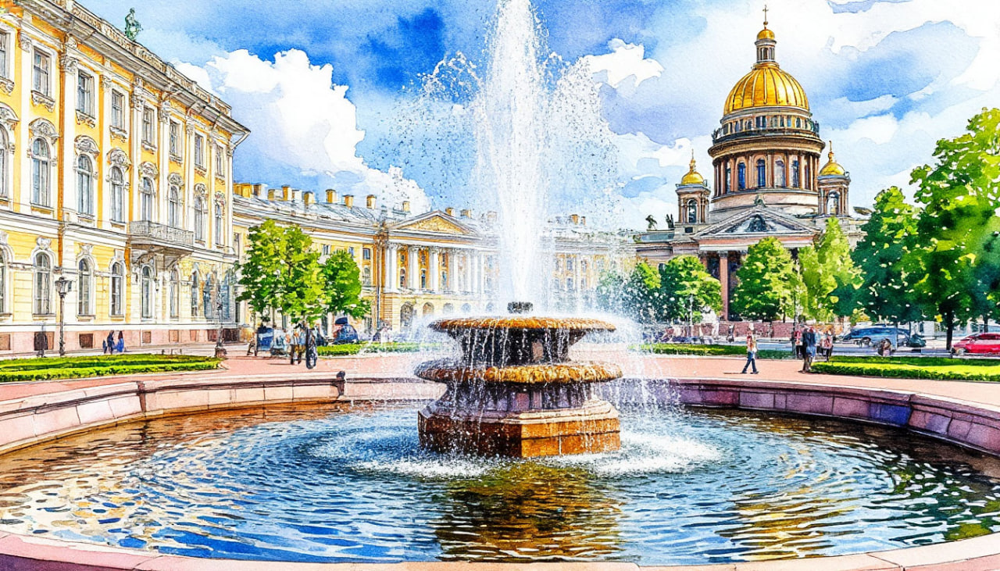

Летят алмазные фонтаны

Даты тура: 30 апреля - 4 мая | 14 - 18 мая и далее каждый четверг.
Стоимость тура * :
-
* в зависимости от дат тура - от 25 850 р. - взрослый
- от 25 650 р. - пенсионеры/школьники
- по запросу - одноместное размещение
По программе:
- - Обзорная экскурсия по Санкт-Петербургу
- - Территория Петропавловской крепости
- - Летний сад
- - Кронштадт
- - Остров фортов
- - Никольский Морской собор
- - Петергоф с прогулкой по Нижнему парку фонтанов
- - Царское село с Екатерининским парком
- - Павловск
Программа тура:
1 день: Отправление
- 17-00- выезд из Костромы от ТРЦ "РИО" (ул. Магистральная, 20), правый угол от центрального входа. Ночной переезд
2 день:
- 08:00 Ориентировочное прибытие в Санкт-Петербург. Встреча с экскурсоводом.
- Завтрак в кафе города.
- Обзорная экскурсия по городу «Град позолоченных соборов, Дворцов изящных и палат…»: знакомство с историей города Петра от основания до наших дней, с великолепными архитектурными ансамблями парадного центра Петербурга ( Обзорно - Стрелка Васильевского острова, Университетская, Адмиралтейская и Дворцовая набережные, Марсово поле, Невский проспект , Троицкая площадь, Каменноостровский проспект ) . Автобус непременно сделает остановку для фотопаузы на Дворцовой и Сенатской площади у памятника Петру I, «Медный всадник», у крейсера «Аврора».
- В ходе экскурсии Вы посетите главный кафедральный собор города – Казанский собор.
- Экскурсия по территории Петропавловской крепости «Здесь будет город заложен…": бастионы и куртины XVIII века, самое высокое сооружение города - Собор Святых Петра и Павла, являющееся символом Санкт-Петербурга (внешний осмотр), монетный двор, здание тюрьмы Трубецкого бастиона - главной политической тюрьмы царской России.
- Обед в кафе города.
- Посещение Летнего сада — место, без которого нельзя представить Петербурга
- Узнаете, как еще при Петре I началась история этого удивительного городского уголка, рассмотрите красивые аллеи, скульптуры и фонтаны. (При закрытии сада на платное мероприятие производится замена парка на Измайловский сад (сад Буфф) — старейший сад и один из самых театральных парков Петербурга)
- Размещение в отеле. Cвободное время
- 22: 30 - Ночная автобусная экскурсия подарит Вам уникальную возможность увидеть совсем другой город. Исходящий из ниоткуда серебристый свет окутает громаду Михайловского замка и сделает невесомым Смольный собор. В таинственном сумраке Вы увидите Невский проспект, Летний сад, древних египетских сфинксов и Петропавловскую крепость, загадаете желание у памятника Чижику-Пыжику. В завершение экскурсии Вас ждет уникальное зрелище - плавно раскрывающиеся крылья невских мостов - Дворцового, Троицкого, и Литейного. Успейте насладиться этим зрелищем.
- Стоимость * - 1 500 руб./взрослые, 1 300 руб./дети 15 лет.
- * Оплата при бронировании или сопровождающему на маршруте.
За дополнительную плату (по желанию):
3 день:
- Завтрак в отеле «шведский стол»
- Мы проедем по дороге, с которой открывается вид на Лахта-центр, стадиона. Вы сможете полюбоваться видом на эти необычные объекты.
- Экскурсия в Кронштадт. По пути к пункту назначения мы проедем через большой подводный туннель над главной дамбой, которая спасает Санкт-Петербург от наводнений.
- НОВИНКА Остановка на «Острове фортов». Во время экскурсии Вы пройдете по Аллее героев российского флота, посетите Маяк памяти. На маяке запечатлены имена и звания 200 героев — адмиралов, офицеров, мичманов и матросов, начиная с эпохи Петра I и заканчивая нашим временем.
- Вы увидите и сможете прокатится на панорамных качелях, а также с берега парка «Остров фортов» открывается удивительный вид. Здесь можно потеряться во времени, наблюдая за гаванью в стационарные смотровые бинокли. Сделаем остановку у Нулевого километра - символической точки отсчета, показывающая расстояние от «колыбели российского флота» — Кронштадта — до ключевых отечественных и зарубежных портовых городов.
- А далее Вы отправитесь на Остров Котлин, который находится в Финском заливе и защищает Петербург с моря. За свою уникальную атмосферу Кронштадт внесён в список всемирного наследия ЮНЕСКО.
- В Кронштадте вас ждёт пешеходная экскурсия по знаковым местам. Увидите Синий мост, на котором расположен футшток, по нулевой отметке которого ведется отсчет всех глубин и высот на территории бывшего Союза. Здесь есть свой Гостиный двор, своё Адмиралтейство, Летний сад и даже собственная полуденная пушка. Вы пройдётесь по Петровскому доку, Якорной площади, а в свободное время сможете вернуться в наиболее понравившиеся места.
- Посещение Никольского морского собора.
- А далее по дамбе отправляемся в Петергоф. «Уходим под воду!» на глубину 28 метров под Морским каналом по подземному туннелю (его длина около 2 км), который соединяет Южный берег Финского залива с островом Котлин.
- Наш путь пройдет через Ораниенбаум. Вы услышите историю Дворцово-паркового ансамбля "Ораниенбаум", со старейшим сооружением Ломоносова - Большого Меншиковского дворца.
- Обед в кафе города
- Экскурсия в Петергофа "Летят алмазные фонтаны..."
- Прогулка по Нижнему парку
- Петергоф – жемчужина пригородов Санкт-Петербурга. Здесь туристов ждут:
- - Великолепные фонтаны, включая Большой каскад с Самсоном.
- - Великолепные фонтаны, включая Большой каскад с Самсоном.
- - Дворцы (внешний осмотр), такие как Большой дворец и Монплезир
- - Ландшафтные сады с аллеями и цветниками.
- - Множество скульптур и павильонов.
- Каждый уголок Петергофа наполнен историей и красотой, что делает прогулку незабываемой.
- Отправление в Санкт-Петербург.
- После 17:00 – свободное время
4 день:
- Завтрак в гостинице. Освобождение номеров и выход в автобус (с вещами)
- Экскурсия на прогулочном кораблике по рекам и каналам Санкт-Петербурга - «Северная Венеция». Стоимость* - 1 500 руб./взрослые, 1 300 руб./дети до 15 лет.
- * Оплата при бронировании тура или сопровождающему группы.
- Царское Село и Павловск в один день. На этой экскурсии вас ждет история двух летних импер аторских резиденций, рассказы о блеске и роскоши Двора.
- Выезд на экскурсию «Золотой Век Екатерины»
- Царское село или г. Пушкин – один из красивейших пригородов Петербурга, который можно посетить в любое время года. По дороге Вы проедете маршрутом, которым царская семья добиралась до своей загородной резиденции. По пути увидите верстовые столбы, оставшиеся от времени их правления, и юго-западный район Петербурга с его достопримечательностями.
- Экскурсия по Екатерининскому Парку. Екатерининский парк – красивейший памятник мирового садово-паркового искусства 18 – 20 вв. Прогуливаясь по нему, вы испытаете массу приятных эмоций и ощутите наслаждение от его живописной природы. Во время экскурсии по парку вы увидите самые яркие и интересные достопримечательности Царского села: Екатерининский дворец, Камеронова галерея, Эрмитаж, Эрмитажная кухня, Верхняя и Нижняя ванна, Адмиралтейство, Грот, Холодная баня (Агатовые комнаты), Гранитная терраса, Турецкая баня, Мраморный мост.
- Посещение Екатерининского дворца. Вы увидите огромный Екатерининский дворец XVIII века, который создал великий архитектор Бартоломео Растрелли. Познакомитесь с впечатляющим внутренним убранством, пройдётесь по Большому (Тронному) залу, сделаете основательную остановку в Янтарной комнате. Последняя была недавно восстановлена в полном объёме. Над реконструкцией знаменитого кабинета трудились несколько десятилетий, и теперь она выглядит ещё внушительнее, чем прежде.
- Стоимость - 1500 руб./взр., дети с 14 лет и студенты очных факультетов при наличии студенческого билета - 900 руб./чел., пенсионеры - 900 руб./чел., дети с 7 до 13 лет – 600 руб./чел., дети строго до 6 лет - бесплатно
- ВНИМАНИЕ Участники специальной военной операции, члены семьи участников специальной военной операции – посещают дворец БЕСПЛАТНО.
- Посещение дворца для желающих вместо свободного времени в парке.
- А далее мы совершим маленькое, но невероятно увлекательное путешествие в Павловск.
- Павловский пейзажный парк — один из самых больших и красивых в Европе. Мы прогуляемся мимо знаменитого Павловского дворца, Вольерного садика, Павильона Трех граций, увидим Памятник родителям, Мавзолей Павла I и пройдем по Мосту Кентавров. Вы узнаете историю памятника мировой культуры эпохи классицизма и отметите эффект перспективного обзора, который в ту пору был новым словом в ландшафтном дизайне. Парк поразит своими размерами и очарует живописными пейзажами.
- 18:00 (ориентировочно) Поздний обед в кафе города
- Отправление домой.
За дополнительную плату (по желанию):
За дополнительную плату (по желанию) СТРОГО ПРИ БРОНИРОВАНИИ ТУРА:
5 день:
Прибытие в Кострому в первой половине дня (ориентировочно)
В стоимость тура входит:
- - проживание в гостинице*
- * «Cosmos Saint-Petersburg Pribaltiyskaya Hotel» 4* (Номер реестровой записи: С782024022202).
- - проезд на автобусе
- - питание: 3 завтрака + 3 обеда
- - услуги гида-экскурсовода
- - экскурсионная программа
- - автобусное обслуживание по программе тура
Дополнительно оплачиваются (по желанию):
- - Экскурсия на прогулочном кораблике «Северная Венеция». Стоимость 1 500 руб./взрослые, 1 300 руб./дети до 15 лет. Оплата при бронировании или сопровождающему группы
- - Ночная экскурсия по городу - Стоимость 1 500 руб./взрослые, 1 300 руб./дети до 15 лет. Оплата при бронировании или сопровождающему группы
- - Посещение Екатерининского дворца СТРОГО ПРИ БРОНИРОВАНИИ ТУРА - Стоимость - 1500 руб./взрослые, дети с 14 лет и студенты очных факультетов при наличии студенческого билета - 900 руб./чел., пенсионеры - 900 руб./чел., дети с 7 до 13 лет – 600 руб./чел., дети строго до 6 лет - бесплатно.
- ВНИМАНИЕ Участники специальной военной операции, члены семьи участников специальной военной операции – посещают дворец БЕСПЛАТНО.
- Для бронирования необходимы данные паспорта РФ и свидетельства о рождении, если с вами путешествуют дети
- Предоплата – 50% от стоимости тура. Остаток за 30 дней до даты выезда.
- Любой тур можно оформить не выходя из дома. Подробнее: Тут
Стоимость тура не зафиксированы и могут быть изменены в большую или меньшую сторону в зависимости от уровня спроса в любой момент.
Время начала экскурсий и их порядок указано ориентировочно.
Фирма-исполнитель оставляет за собой право замены экскурсий без уменьшения общего объема экскурсионной программы.
По вопросам бронирования обращайтесь: